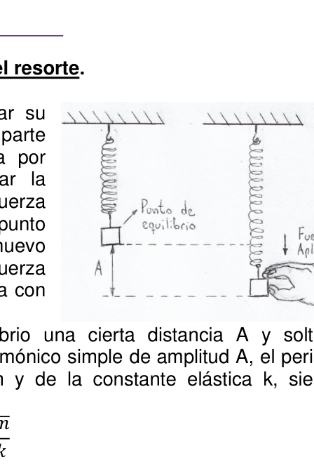

Determinacion del numero pi
PE34. Escuela Tecnológica Ing. Giúdici Lomas de Zamora, Buenos Aires.
1ra Experiencia: Determinación experimental del número π. Introducción El número π surge, entre otras, de la relación entre el Diámetro (D) de una circunferencia y la Longitud (L) de dicha circunferencia, donde la Longitud equivale en este caso, al Perímetro de la circunferencia. La relación viene dada por: 𝝅= 𝑳 𝑫 Ambas longitudes, L y D, se pueden medir y por lo tanto, obtener este número a partir de magnitudes medidas directamente.
Objetivos
Obtener experimentalmente el valor de 𝝿, expresando su resultado, su intervalo de
incerteza y validar la calidad de los resultados.
Materiales
- Un objeto cilíndrico por cada integrante, de dimensiones diferentes. (termo, vaso, frasco de mermelada, frasco de medicamentos, etc.)
- Instrumento de medición de longitudes (Regla milimetrada, calibre, etc.)
Procedimientos a) Discutir y establecer un método para poder medir (no calcular) el Diámetro y la Longitud de la circunferencia del objeto cilíndrico de cada integrante. b) Cada integrante debe obtener un par de valores de Longitud y de Diámetro de su objeto cilíndrico.
Resultados c) Informar las mediciones directas realizadas en una tabla con este formato, realizando la Propagación de Incertezas correspondiente respecto a π:
n L ΔL D ΔD π Δπ
mm mm mm mm
1
2
…
OAF 2020- 167
d) Con los valores de π obtenidos por cada integrante en el punto anterior, realizar
la tabla de procesamiento de datos:
n
πi
Δπ
𝝅̅
Δπdif Error
Cuadrá
tico
Medio
eπ%
1
2
…
e) Expresar el Resultado de la medición indirecta de π.
Conclusión f) Representar en el plano cartesiano las variables D y L como par ordenado (x ; y) que incluya las barras de error y aplicar la regresión lineal. g) Analizar la Correlación entre las variables h) Mediante el Intervalo de Incerteza, validar el resultado de π obtenido evaluando el resultado de la gráfica y el valor conocido de π
2da Experiencia: Serie Triboeléctrica.
Introducción
Carga triboeléctrica: Carga por contacto que involucra
el intercambio de electrones.
Prácticamente todos los materiales son triboeléctricos. Por
ejemplo, en la mayoría de las situaciones, las personas se
cargan por roce con la ropa, con los materiales que
manipula y/o por contacto con objetos cargados.
La carga neta de un cuerpo está asociada con un potencial
electrostático respecto de tierra a través de la capacidad que
este tiene de acumular carga (capacidad del cuerpo). La
humedad del ambiente colabora para descargar los cuerpos
cargados triboeléctricamente. Por ejemplo:
Niveles de potencial de carga estática típicos Humedad del ambiente Medio de generación de carga 10
25% 65
90% Caminar sobre carpeta 35000 V 1500 V Caminar sobre piso de vinilo 12000 V 250 V Trabajador en banco de trabajo 6000 V 100 V Tomar bolsa de polietileno de banco de trabajo 20000 V 1200 V Sentarse en silla con espuma de poliuretano 18000 V 1500 V
Pocas personas se dan cuenta de que se han cargado cuando su potencial respecto de tierra no supera los 2500 V. Serie tribológica. Figura 3: Es una tabla que permite determinar cómo se carga un material cuando entra en contacto con otro de la tabla (propiedades de carga de materiales por fricción): Si dos materiales de la tabla se ponen en contacto, el más alto en la serie cederá electrones al otro, cargándose positivamente (mientras que el otro material adquirirá una carga negativa).
168 - OAF 2020 Cuanto más separados se hallen los materiales, mayor es la transferencia de carga y, por lo tanto, se genera una diferencia de potencial mayor. Se observa que el cuerpo humano es uno de los materiales más tribo-positivo de la serie. Fuente: Departamento de Física – UNS | Prof. C. Carletti
Objetivos
- Verificar las interacciones electrostáticas
- Realizar la Serie Triboeléctrica con los materiales utilizados
- Determinar el tipo de carga en cada material
Materiales (¡Todos los materiales son opcionales, cuantos más, mejor!)
- Material de carga: lana, polar, seda, piel animal, algodón, bolsa plástica.
Función: se utilizarán para frotar los materiales inductores. Sugerencias: ropa. - Material inductor: plástico, metal, madera, vidrio.
Función: Se espera que se puedan manipular objetos de estos materiales para que, luego de ser frotados con los materiales de carga, se acerquen a otros objetos para verificar la interacción electrostática. Sugerencias: lapiceras, reglas, vasos plásticos o de vidrio, utensilios de cocina, etc. - Péndulo (Objetos de prueba): Papel de Aluminio, Telgopor, materiales inductores.
Función: Serán objetos colgantes de distintos materiales, que puedan moverse libremente, para observar su comportamiento frente a los materiales inductores con los que interactúen. - Accesorios: elementos varios para el armado del péndulo. Sugerencias: hilo, tijera, cinta adhesiva, pegamento, chinches, varillas, madera, etc.…
Procedimientos a) Armado del Péndulo eléctrico
- Con la imagen de referencia (figura 4), pueden armar uno similar o plantear variantes que cumplan con la misma función.
- Tener en cuenta que algunos de los Objetos de prueba, como una lapicera, también deberán ser colgados para observar su comportamiento, por lo que pueden plantear cualquier variante u opción para resolverlo. Registrar fotográficamente el/los dispositivos utilizados.
- La Bolilla es una bolita o pedacito de Telgopor
envuelta en papel de aluminio, no es opcional.
b) Observación de Interacciones Actividad N°1 - Frotar con el material de carga el material inductor y acercarlo al péndulo, sin contacto.
- Registrar si el péndulo se mueve acercándose o alejándose del material
inductor o no sucede nada.
Actividad N°2 - Frotar con el material de carga el material inductor y poner la parte frotada en contacto con el péndulo por un pequeño lapso y separar.
- Volver a frotar el material inductor y acercarlo al péndulo, sin contacto.
- Registrar si se mueve acercándose o alejándose del material inductor o
no sucede nada.
Actividad N°3 - Colgar en el péndulo un material inductor (quitar la bolita). Asegurarse de que esté descargado.
OAF 2020- 169
- Frotar con el material de carga únicamente el material inductor que tienen en la mano y acercarlo al péndulo, sin contacto.
- Registrar si el péndulo se mueve acercándose o alejándose del material
inductor o no sucede nada.
Actividad N°4 - Quitar el material inductor de la Actividad N°3, frotar con un material de carga y volver a colocar como péndulo.
- Frotar también el material inductor que tienen en la mano y acercarlo al péndulo, sin contacto, preferentemente en la zona donde se frotó previamente.
- Registrar si el péndulo se mueve acercándose o alejándose del material inductor o no sucede nada.
Aclaración: Se espera que puedan intercambiar los materiales de carga y los materiales inductores para registrar sus comportamientos.
Resultados c) Modelo de tabla para organizar las actividades y observaciones, ver figura 5:
Conclusión d) Escribir la Serie Triboeléctrica con los materiales utilizados. e) Determinar la carga adquirida de los materiales de inducción y los objetos de prueba en cada interacción registrada. f) Explicar las interacciones verificadas en función de la carga adquirida. g) Determinar qué características tienen dichos materiales para adquirir carga. h) Determinar qué características tienen los materiales con los que no se verificaron interacciones.

Topic: Mathematics Metodi: Experimental Data Analysis, Error Propagation Competenze: Physical Reasoning, Experimental Data Analysis Objects: Cylinder Fonte: Testo (PDF) — p.7
Determinare il numero pi
PE34. Scuola Tecnologica Ing. Giudici Lomas di Zamora, Buenos Aires.
1a Esperienza: Determinazione sperimentale del numero π. Introduzione Il numero π deriva, tra l’altro, dal rapporto tra il Diametro (D) di una circonferenza e la lunghezza (L) di tale circonferenza, dove la lunghezza in questo caso è pari a Perimetro della circonferenza. Il rapporto viene dato da: π= 𝑳 𝑫 Entrambe le lunghezze, L e D, possono essere misurate e quindi, ottenere questo numero da le dimensioni misurate direttamente.
Obiettivi Ottenere sperimentalmente il valore di π, esprimendo il suo risultato, il suo intervallo di l’incertitudine e la validità dei risultati.
Materiali
- Un oggetto cilindrico per ogni componente, di dimensioni diverse. (termine, vaso, bottiglia di marmelada, bottiglia di medicinali, ecc.)
- Instrumento di misura delle lunghezze (regola millimetrica, calibro, ecc.)
Procedure a) Discutere e stabilire un metodo per poter misurare (non calcolare) il diametro e la Lunghezza della circonferenza dell’oggetto cilindrico di ogni integrante. b) Ogni integrante deve ottenere una coppia di valori di lunghezza e di diametro del suo oggetto cilindrico.
Risultati c) Indicare le misure dirette effettuate in un tabella con questo formato, effettuando la corrispondente Spread of Uncertainties per π:
n L ΔL D ΔD π Δπ
mm mm mm mm
1
2
…
OAF 2020- 167 d) Con i valori di π ottenuti per ogni integrante nel punto precedente, eseguire il tabello di elaborazione dei dati: n πi Δπ 𝝅̅ Δπdif Errore Quadratto
- Tico Mezzo eπ% —
1
2
…
e) Esprimere il risultato della misurazione indiretta di π.
Conclusione f) Rappresentare sul piano cartesiano le variabili D e L come coppie ordinate (x; y) che include le barre di errore e applica la regressione lineare. g) Analizzare la correlazione tra le variabili h) Con l’intervallo di incertezza, validare il risultato di π ottenuto valutando il risultato grafico e valore noto di π
2a esperienza: serie triboelettrica. Introduzione Carga triboelettrica: carica per contatto che coinvolge lo scambio di elettroni. Quasi tutti i materiali sono triboelettrici. Per Per esempio, nella maggior parte delle situazioni, le persone si La gente si sposta per il lavoro con i vestiti, con i materiali che manipolazione e/o contatto con oggetti carichi. Il carico netto di un corpo è associato a un potenziale. La capacità di un’elettroostatica rispetto alla terra è di il corpo ha la capacità di accumulare carico. La L’umidità dell’ambiente collabora a scaricare i corpi. caricabile triboelettricamente. Per esempio:
Livelli di potenziale di carico tipica statica Umidità di cui al ambiente Mezzo di generazione di carico 10
25% 65
90% Camminare su un cartellone 35000 V 1500 V Camminare su un pavimento in vinile 12000 V 250 V Lavoratore di banco di lavoro 6000 V 100 V Prendere una borsa di polietilene da banca di lavoro 20000 V 1200 V Siede in una sedia con la schiuma di poliuretano 18000 V 1500 V
Poche persone si rendono conto che si sono caricate quando il suo potenziale rispetto alla terra non supera i 2500 V. Serie tribologica. Figura 3: È una tabella che permette determinare come si carica un materiale quando si entra in contatto con un altro della tabella (proprietà di carico di Materiali per frizione): se due materiali della tavola si mettono In contatto, il più alto della serie cederà elettroni all’altro, caricando positivamente. (mentre l’altro materiale acquisterà un carico negativo).
168 - OAF 2020 Più i materiali sono separati, più è grande il trasferimento di carico e, per Quindi si genera una differenza di potenziale maggiore. Si osserva che il corpo umano è uno dei materiali più tribopo-positivi della serie. Fonte: Dipartimento di Fisica UNS. C. Carletti
Obiettivi
- Verificare le interazioni elettrostatiche
- realizzare la serie triboelettrica con i materiali utilizzati
- Determinare il tipo di carico in ogni materiale
Materiali (Tutti i materiali sono opzionali, più, meglio!)
- Materiale di carico: lana, polare, seta, pelle animale, cotone, sacchetta di plastica. Funzione: saranno utilizzati per strofinare i materiali induttori. Suggerimenti: vestiti.
- Materiale induttore: plastica, metallo, legno, vetro. Funzione: si prevede che gli oggetti di questi materiali possano essere manipolati in modo da: dopo essere stati strofinati con i materiali di carico, avvicinarsi ad altri oggetti per verificare l’interazione elettrostatica. Suggerimenti: lapis, regole, bicchieri di plastica o di vetro, utensili da cucina, ecc.
- Pendolo (oggetti di prova): carta di alluminio, telgopor, materiali induttori. Funzione: saranno oggetti appesi di diversi materiali, che possono muoversi La capacità di osservare il loro comportamento nei confronti dei materiali induttori con che interagiscono.
- accessori: diversi elementi per il pendolo. Suggerimenti: filo, forbice, nastro adesivo, colla, zanzare, bastoni, legno, ecc.…
Procedure a) Armatura del pendolo elettrico
- Con l’immagine di riferimento (Figura 4), possono costruire uno simile o presentare varianti che svolgono la stessa funzione.
- Si noti che alcuni degli oggetti di prova, come una penna, anche
- devono essere appese per osservare il suo comportamenti, per cui possono sollevare Qualsiasi variante o opzione per risolverlo. Registrazione fotografica dei dispositivi utilizzati.
- La Boccia è un pezzo di Telgopor in un’incubatrice di carta di alluminio, non è opzionale. b) Osservazione delle interazioni Attività N°1
- Frottare con il materiale carico il materiale induttore e avvicinarlo al pendolo, senza contatto.
- Raccordare se il pendolo si muove avvicinandosi o allontanandosi dal materiale Induttore o non succede nulla. Attività N°2
- Frottare con il materiale di carico il materiale induttore e mettere la parte frottato in contatto con il pendolo per un breve periodo e separato.
- Ristruggere il materiale induttore e avvicinarlo al pendolo, senza contatto.
- Ricordare se si muove avvicinandosi o allontanandosi dal materiale induttore o Non succede niente. Attività N°3
- appendere al pendolo un materiale induttore (sbarazzarsi della pallina). Assicurarsi di che sia scaricato.
OAF 2020- 169
- Frottare con il materiale carico solo il materiale induttore che hanno nella mano e avvicinarlo al pendolo, senza contatto.
- Raccordare se il pendolo si muove avvicinandosi o allontanandosi dal materiale Induttore o non succede nulla. Attività N°4
- rimuovere il materiale induttore dell’attività N°3, strofinare con un materiale di carica e riinstalla come pendolo.
- Stroppiare anche il materiale induttore che si trova nella mano e avvicinarlo al pendolo, senza contatto, preferibilmente nella zona in cui si è strofinato
- Prima di tutto.
- Raccordare se il pendolo si muove avvicinandosi o allontanandosi dal materiale Induttore o non succede nulla.
Clarificazione: si prevede che potranno scambiare materiali di carico e materiali Induttori per registrare i loro comportamenti.
Risultati c) Tabella di organizzazione delle attività e delle osservazioni, figura 5:
Conclusione d) Scrivere la serie triboelettrica con i materiali utilizzati. e) Determinare il carico acquisito dei materiali di induzione e degli oggetti di prova in ogni interazione registrata. f) Esprimi le interazioni verificate in base al carico acquisito. g) Determinare le caratteristiche di tali materiali per l’acquisto di carico. h) Determinare quali sono le caratteristiche dei materiali non verificati interazioni.
Topic: Mathematics Metodi: Experimental Data Analysis, Error Propagation Competenze: Physical Reasoning, Experimental Data Analysis Objects: Cylinder Fonte: Testo (PDF) — p.7
The following information shall be provided:
PE34. The Commission shall adopt implementing acts in accordance with Article 21 of this Regulation. Judge Lomas from Zamora, Buenos Aires.
Experience: Experimental determination of the number π. The first is the introduction. The number π arises, inter alia, from the ratio of the diameter (D) of a circumference and the length (L) of that circumference, where the length in this case is equal to Perimeter of the circumference. The ratio is given by: π= 𝑳 𝑫 Both longitudes, L and D, can be measured and therefore, get this number from magnitude measured directly.
Objectives To experimentally obtain the value of π, expressing its result, its interval of The Commission will be able to assess the results of the evaluation and evaluate the results.
Materials
- One cylindrical object per member, of different dimensions. (term, glass, jelly bottle, medicine bottle, etc.)
- Longitude measuring instrument (millimeter rule, caliber, etc.)
The procedure (a) Discuss and establish a method for measuring (not calculating) the diameter and the Length of the circumference of the cylindrical object of each integral. (b) Each integer must obtain a pair of values of length and diameter from its cylindrical object.
Results (c) Report the direct measurements made in a table in this format, by carrying out the corresponding Uncertainty Spread with respect to π:
n L ΔL D ΔD π Δπ
mm mm mm mm
1
2
…
The Commission shall adopt implementing acts in accordance with Article 21 of Regulation (EC) No 1272/2009. (d) With the values of π obtained by each integer in the previous point, perform the data processing table: n πi Δπ 𝝅̅ The following information is provided for in Part A of Annex I to Regulation (EC) No 1907/2006: It’s going to be I ‘m going to tell you . Half . eπ%
1
2
…
(e) Express the result of the indirect measurement of π.
The conclusion (f) To represent the variables D and L in the Cartesian plane as ordered pairs (x; y) which includes the error bars and apply linear regression. (g) Analyze the correlation between variables (h) Validate the π result obtained by evaluating the Graph result and known value of π
Experience 2nd: Triboelectric series. The first is the introduction. Triboelectric charge: contact charge that involves the electron exchange. Virtually all materials are triboelectric. By For example, in most situations, people are They rub it with clothes, with materials that handling and/or contact with loaded objects. The net load of a body is associated with a potential The electrical conductivity of the earth is determined by the This has to accumulate load (body capacity). La Humidity in the environment helps to discharge bodies. Triboelectrically charged. For example:
Load potential levels Typical static Humidity of the Environmental policy Means of load generation 10
25% 65
90% Walking on a folder 35000 V 1500 V Walking on vinyl floors 12000 V 250 V Workman at work bank 6000 V 100 V Take a polyethylene bag from Work bank 20000 V 1200 V Sit in a chair with foam of Polyurethane 18000 V 1500 V
Few people realize they ‘ve been charged when they ‘ve been its ground potential does not exceed 2500 V. Tribal series. Figure 3: It’s a table that allows determine how a material is loaded when it enters Contact with another of the table (load properties of friction materials): If two table materials are put together In contact, the highest in the series will give electrons to the other, charging positively. (while the other material will acquire a negative charge).
The Commission shall adopt delegated acts in accordance with Article 168 of the Financial Regulation. The more separate the materials, the greater the load transfer and, by So, it generates a greater potential difference. It is observed that the human body It’s one of the most tribo-positive materials in the series. Sources: Department of Physics USS Prof. C. Carletti .
Objectives
- Verify the electrostatic interactions
- To make the Triboelectric Series using the materials used
- Determine the type of load in each material
Materials (All materials are optional, the more the better!)
- Loading material: wool, polar, silk, animal skin, cotton, plastic bag. Function: they will be used to rub the inducing materials. Suggestions: clothes.
- Inducing material: plastic, metal, wood, glass. Function: It is expected that objects from these materials can be manipulated so that, After being rubbed with the loading materials, approach other objects to verify the electrostatic interaction. Suggestions: pencils, rules, plastic glasses or Glass, kitchenware and similar articles
- Pendulum (Testing Objects): Aluminum paper, telgopor, inducing materials. Function: They will be hanging objects of different materials, which can move The use of the product is not restricted to the use of the product. The interactive ones.
- Accessories: various elements for the pendulum armor. Suggestions: thread, scissors, adhesive tape, glue, bed bugs, rods, wood, The following information is provided for in Article 2 (1) of Regulation (EC) No 1907/2006:
The procedure (a) Armed with the electric pendulum
- With the reference image (Figure 4), you can To set up a similar one or to propose variants that They serve the same function.
- Please note that some of the Objects Testing, like a pencil, too. They must be hung to observe their behavior, so they can raise any variant or option to solve it. Photographically record the device (s) used.
- The Bowl is a little bit of Telgopor. wrapped in aluminum foil, not optional. (b) Observation of interactions The following is the list of the activities:
- Rub the inducer with the load material and bring it closer to the pendulum, without contact.
- Record whether the pendulum moves closer to or away from the material inductor or nothing happens. The following is the list of the activities:
- Rub the inductor material with the load material and place the part rubbed in contact with the pendulum for a short time and separated.
- Re-squeeze the inducer material and bring it close to the pendulum, without contact.
- Record whether it moves near or away from the inducing material or Nothing is happening. The following is the list of the activities:
- Hanging an inducing material on the pendulum (removing the ball). Make sure It’s loaded.
The Commission shall adopt implementing acts in accordance with Article 21 of this Regulation.
- Rub the load material only with the inducing material they have in the hand and close to the pendulum, no contact.
- Record whether the pendulum moves closer to or away from the material inductor or nothing happens. The following information is provided by the Commission:
- Remove the inducing material from Activity N°3, rub with a material of load and re-position as a pendulum.
- Rub the inducer material in your hand and bring it closer to the pendulum, contactless, preferably in the area where it was rubbed previously.
- Record whether the pendulum moves closer to or away from the material inductor or nothing happens.
Clarification: It is expected that they can exchange cargo and materials inducers to record their behavior.
Results (c) Table model for organising activities and observations, see Figure 5:
The conclusion (d) Write the Triboelectric Series with the materials used. (e) Determine the load acquired from the induction materials and objects of the test on each recorded interaction. (f) Explain the interactions verified based on the load acquired. (g) Determine the characteristics of such materials for loading. (h) Determine the characteristics of the materials not verified. interactions.
Topic: Mathematics Metodi: Experimental Data Analysis, Error Propagation Competenze: Physical Reasoning, Experimental Data Analysis Objects: Cylinder Fonte: Testo (PDF) — p.7